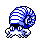
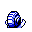

#138
Omanyte
RockWater
Although long extinct, in rare cases, it can be genetically resurrected from fossils
Base stats Total 300
HP35
Attack40
Defense100
Speed35
Special90
Details
- Species
- Spiral
- Height
- 1'04"
- Weight
- 17.0 lb
- Catch rate
- 45
- Base exp
- 120
- Growth
- Medium Fast
Level-up moves
LevelMoveType
StartWater GunWater
StartWithdrawWater
Lv 9Sand-AttackNormal
Lv 11LeerNormal
Lv 17BubblebeamWater
Lv 18Rock ThrowRock
Lv 24BiteDark
Lv 28Horn AttackNormal
Lv 30Rock SlideRock
Lv 48Stone EdgeRock
Evolution
Where to find
Not found in the wild — evolve, trade or catch it elsewhere.
TM / HM
TM06 ToxicTM08 Body SlamTM09 Take DownTM10 Double-EdgeTM11 BubblebeamTM12 Water GunTM13 Ice BeamTM14 BlizzardTM31 MimicTM32 Double TeamTM33 ReflectTM34 BideTM44 RestTM48 Rock SlideTM50 SubstituteHM03 Surf